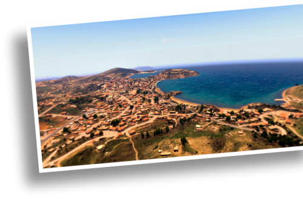

Wolfpack is a multiplayer (14 slots) special operations campaign consisting of ten challenging assault, demolition and reconnaissance missions, three bootcamp training missions and a warm-up mission.
Features
- 10 SpecOp/Recon Missions;
- 3 Bootcamp training missions;
- 1 Warm-up Mission for warming up, modline testing and general training (11 tasks/side-missions)
- Challenging and Immersive gameplay in a lively area of operations;
- Detailed SpecOp style briefings (in-game and PDF/TXT for forum briefings);
- Optimized for dedicated server play;
- Challenging opponents.
- Automatic detection of ACRE2, TFAR, cTAB and ACE3 add-ons
Storyline
June 2034, Altis is in turmoil. The island has been cut off from the outside world due to economical and physical blockades. The local populous has grown impatient with the government and the AFF in particular. Several demonstrations have resulted in the deaths of tens of civilians.
The government was losing control rapidly and called in the help of CSAT. A mistake that would cost them dearly. CSAT saw a golden opportunity to get a much needed foothold in the Mediterranean area. The AAF requested a single battalion of CSAT Infantry. Instead CSAT send the entire 2nd brigade and soon CSAT outnumbers AAF by 11:1. Altis government realized that they lost control completely and stepped down. CSAT General Tehrani has since been in power and controls all of Altis and Stratis.
CSAT is now proven a serious threat to the European region. As diplomatic efforts have not lead to the anticipated result, NATO decided to send a rapid task force to free both islands from CSAT oppression.
DEVGRU has been ordered by JSOC to take out several high value threads on Altis before the NATO campaign commences. Wolf has been tasked with executing 10 missions over a period of 3-4 weeks. Your first mission commences 11 June.
Campaign Missions
Our area of operation lies north of Athira. JSOC expects a HVT to arrive and inspect the CSAR Frini base tomorrow. Wolf will eliminate the HVT once he arrives at the base. Due to the sensitive nature of this mission, detailed objectives will be given on a need to know basis once you have reached the RV. Our local on the ground will do an extensive briefing.
CSAT has taken over the Abdera Airfield and turned the airfield into a helicopter base. The base is home to the 127 AAC Squadron with 6 or 8 Kajman Attack helicopters and to the 17 Air Support Group. About one kilometer north east lies the village of Krya Nera. This used to be a little fisherman's village until CSAT stationed a small fleet of attack vessels there. Primary objective: Abdera Airfield, sabotage all Kajman Attack helicopters stationed at the airfield. Secondary objective: Krya Nera Naval Base, take control of the Naval Base and wait for further instructions.
CSAT's primary communications station is situated on the outskirts of Kavala. It is essential we disrupt communications before we commence the NATO invasion. The nearby power station provides power to the Kavala region, including the communications station. We need to take both out in order to be sure that CSAT's ability to communicate is disrupted. Primary objective: Sabotage the communications station. Secondary objective: Sabotage the power station.
CSAT's propaganda campaign is out of control. Their fear and retribution series broadcasted on television and radio has caused grave concerns both locally and abroad. We need the local populous on our side once the invasions commences. We need to shut down the Altis Broadcasting Company (ABC) in the Capital of Altis, Pyrgos. Sabotage the ABC headquarters. You'll be filled in on the specifics once you are close to the objective.

Maj. F. Kallaziz's replacement has arrived in Pyrgos, Maj. Farrokhzad. We know very little about Maj. Farrokhzad. According to Nikko, the major has already made his mark by having tens of civilians arrested. Supposedly there is a public hanging the day after tomorrow. CIA and MIS are working hard to get more intel about this guy. So it looks like your Wolf troops are going back to Pyrgos. Your objective is to find intel on Maj. Farrokhzad.
Intel shows a large AA-emplacement at a base west of Zoros Bay (codename 'Istanbul'). which gets its intel from a radar site a little north east (codename 'Barcelona'). Your orders are to insert west of Zoros Bay and take out the radar installation at Barcelona and the AA-emplacements at Istanbul.
Our man on the ground, Nikkos got captured by CSAT Intelligence Services. Nikkos knows too much about the upcoming campaign. We need to break him out before they fly him back to the CSAT capital. Nikkos is currently being held in a secret prison codenamed 'U-12'. It is located in Thelos Bay on the east coast of Altis. Wolf is to secure and retrieve Nikkos Fotopoulos.
The last two weeks, SatNav has been tracking a heavy armored squadron consisting of 6 T100 MBT's, 1 x Tigris and APC's plus supporting units. SatNav lost Ice Tiger due to severe overcast weather. According to Nikkos, Ice Tiger should be in the North Western part of Altis. We need confirmation on its exact location. Your orders are to locate Ice Tiger.
Two days ago the 127 Republican Wing Squadron, an elite squadron of TO-199 bombers touched down at Stratis Airbase. The 13th MEU is scheduled to assault Stratis in three days. This can only happen when those TO-199's have been disposed off. We'll advise objectives and targets when you're on the ground.
Your last mission is a high risk mission in Kavala. We are still gathering intel. We'll brief you when you're oscar mike.
WarmUp Mission
The Wolfpack WarmUp Testing & Training (WTT) mission was requested by several communities and was added to volume 1 & 2 since version 1.55. The WTT mission differs slightly from the rest of the Wolfpack missions as it offers respawn of players ((30 seconds) and equipment (5 minutes). This mission can be joined whilst in progress (JIP enabled).
Training Missions
- Basic Training (Part of Wolfpack Vol 1)
- Advanced Training (Part of Wolfpack Vol 1)
- Expert Training (Part of Wolfpack Vol 2)
The training missions have specifically been put together to train for Wolfpack missions.
Author
Credits & Acknowledgements
This MP campaign was carefully put together with the assistance, support and scripts from the following individuals/groups:
Nopryl - CIA community - Killzone Kid - Mad T - Anjan Riot - Void - Zorrobyte - Tonic
License
Wolfpack Vol. 1 and Wolfpack Vol. 2 are licensed under the Arma Public License (APL).